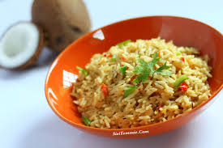

Coconut Fried Rice Recipe

Description
This is a delicious dish of rice cooked in broth and coconut milk and fried in coconut oil. It is very easy and quick to prepare. The dish combines the flavours of coconut, beef, shrimp and rice
Ingredients
- 2 cups of rice
- 1 cup of chicken stock or water (chicken stock gives the dish more flavour)
- 2 cups of coconut milk
- 1 cup of mixed vegetables
- 1 medium onion (chopped)
- 1 large green pepper (chopped)
- 1/2 a teaspoon of curry
- 1/2 a teaspoon of thyme
- Salt to taste
- 2 chicken seasoning cubes
- 1/4 cup of Palm Oil
Steps
- In a medium pot on medium heat, pour in the water/stock, coconut milk, salt, curry, thyme, and, 1 chicken seasoning cube. Stir well, cover the pot and bring the mixture to a boil.
- Add in the washed rice. Simmer on medium-low heat until the rice is cooked and all the liquid has dried up. Set aside to cool. .
- In a large skillet/ frying pan, heat up the Palm Oil. Add in the chopped onions, green pepper, 1 chicken seasoning cube and mixed vegetables. Stir fry for 3- 5 minutes.
- Add in already cooked rice and shrimps. Combine. Taste and adjust for seasoning. Stir-fry for 3 more minutes
- Serve with fruit juice and roasted chicken
Go back